Introduction to Water Conservation
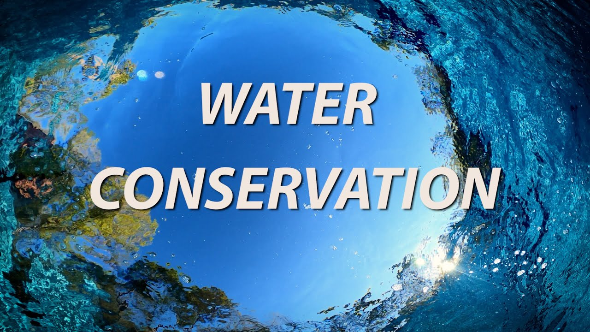
Water conservation involves the careful use and preservation of water resources to ensure their sustainability for future generations. As the global population grows and climate change impacts water availability, it is crucial to adopt water-saving practices and technologies. Effective water conservation reduces the strain on natural water bodies, supports ecosystems, and ensures that clean water is available for all.
Importance of Water Conservation
Water is a finite resource essential for all forms of life. Conserving water helps protect our environment, reduces the energy required for water treatment and distribution, and ensures that we have enough water to meet our current and future needs. By making small changes in our daily lives, we can significantly reduce water wastage and contribute to a more sustainable future.
Consequences of Water Scarcity
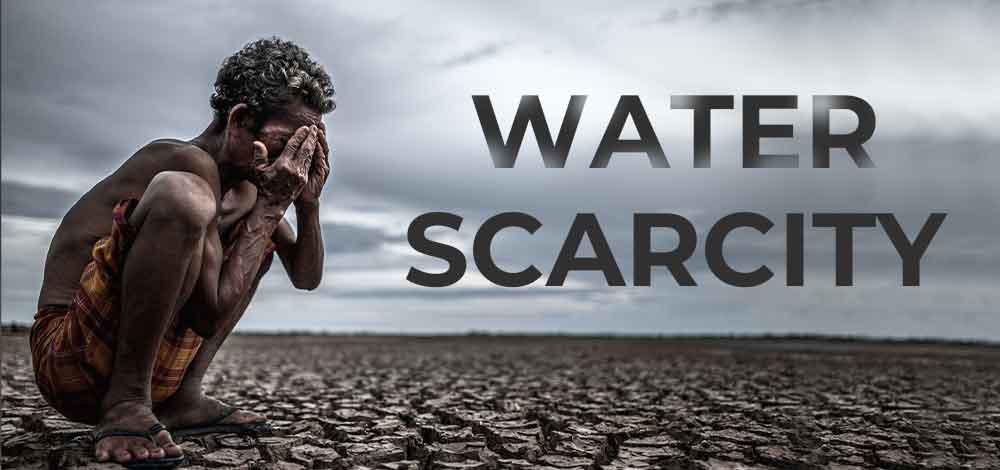
Water scarcity can have severe consequences for both the environment and human populations:
- Environmental Impact: Reduced water levels in rivers, lakes, and reservoirs can harm ecosystems, leading to loss of biodiversity and habitat degradation.
- Health Risks: Limited access to clean water can increase the spread of waterborne diseases and impact hygiene and sanitation practices.
- Agricultural Challenges: Water scarcity can reduce crop yields, leading to food shortages and higher food prices.
- Economic Effects: Industries that rely heavily on water, such as agriculture and manufacturing, may face operational challenges, leading to economic losses.
Techniques for Water Conservation
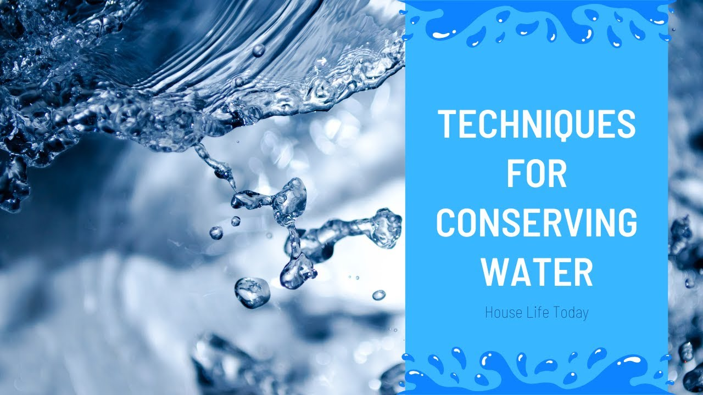
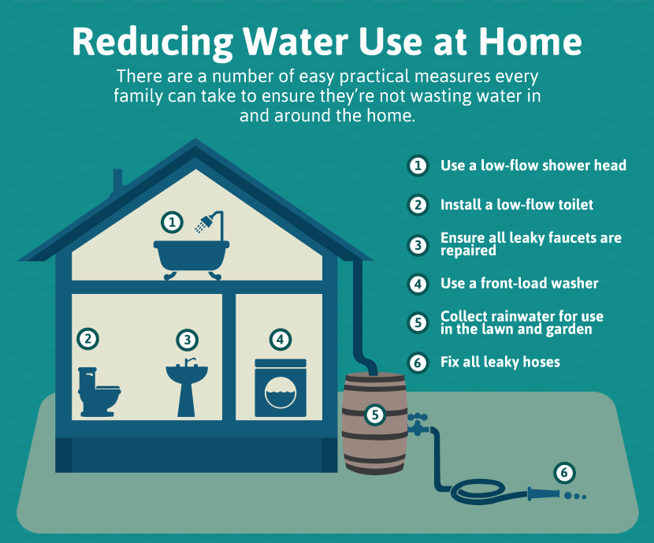
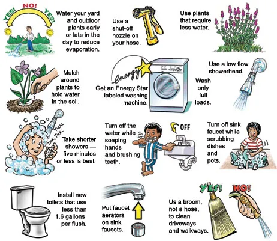
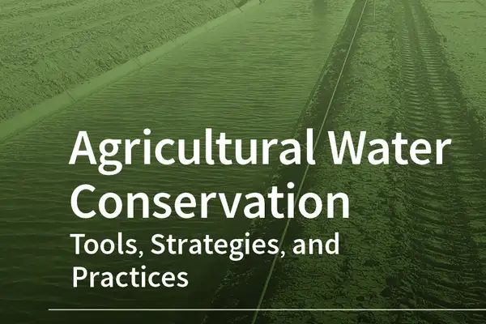
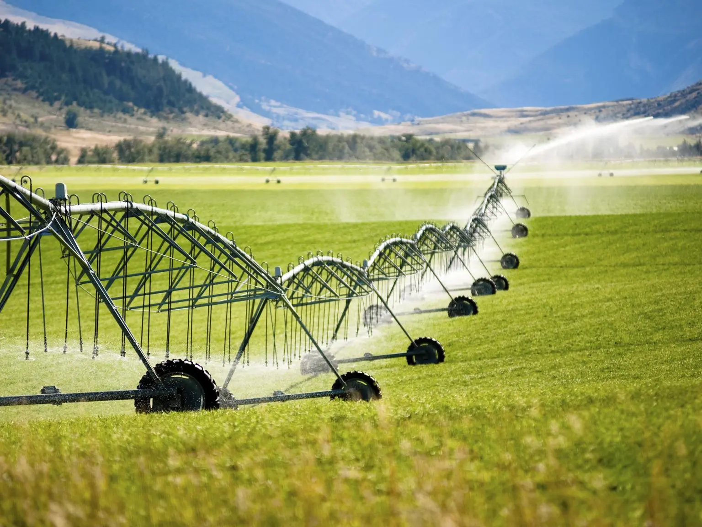
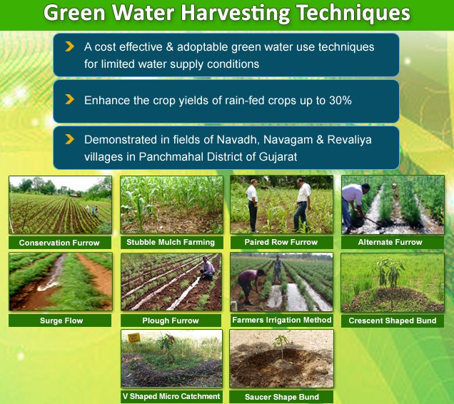
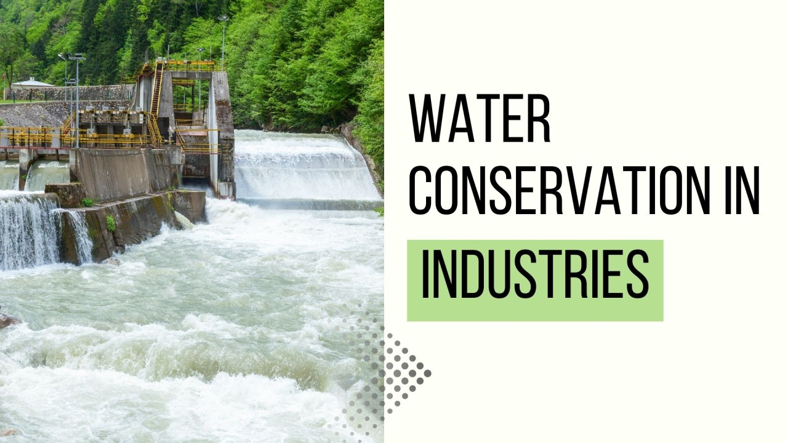
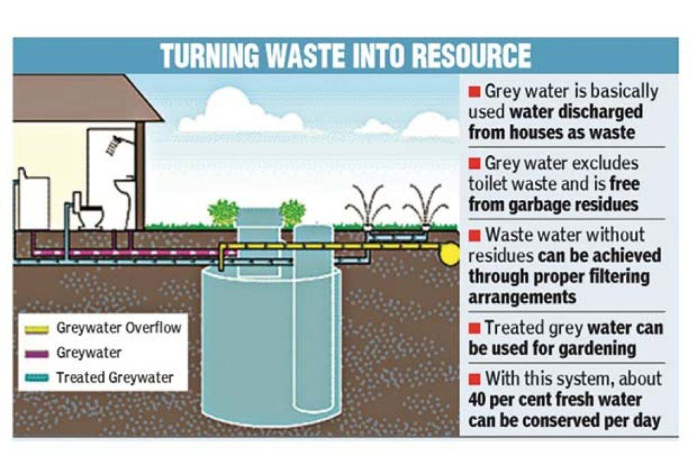
Household Techniques
- Fixing leaks in taps and pipes to prevent water wastage.
- Using water-saving appliances like low-flow toilets and showerheads.
- Collecting rainwater for gardening and other outdoor uses.
- Turning off the tap while brushing teeth or washing dishes.
Agricultural Techniques
- Using drip irrigation systems to water crops efficiently.
- Planting drought-resistant crop varieties.
- Practicing rainwater harvesting for irrigation.
- Implementing soil moisture sensors to optimize watering schedules.
Industrial Techniques
- Recycling and reusing water in industrial processes.
- Implementing water-efficient technologies and practices.
- Treating and purifying wastewater for reuse.
- Conducting regular water audits to identify and address inefficiencies.
Benefits of Water Conservation
- Environmental Protection: Reduces the strain on natural water resources and helps maintain healthy ecosystems.
- Energy Savings: Less energy is required to pump, treat, and heat water, reducing greenhouse gas emissions.
- Economic Savings: Lower water and energy bills for households, businesses, and communities.
- Increased Water Availability: Ensures that water is available for essential uses, such as drinking, agriculture, and industrial processes.
- Resilience to Drought: Helps communities better withstand periods of water scarcity.
How You Can Contribute
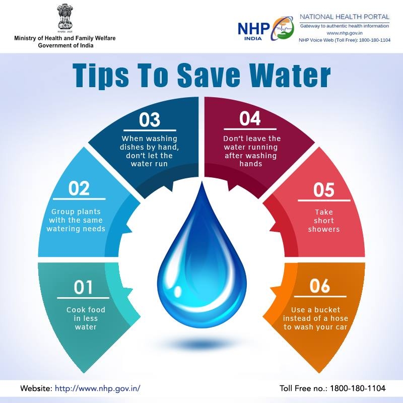
- Adopt water-saving habits in your daily routine.
- Educate others about the importance of water conservation.
- Support policies and initiatives that promote sustainable water use.
- Participate in community water conservation projects.
- Encourage businesses and industries to implement water-efficient practices.
Our Activities
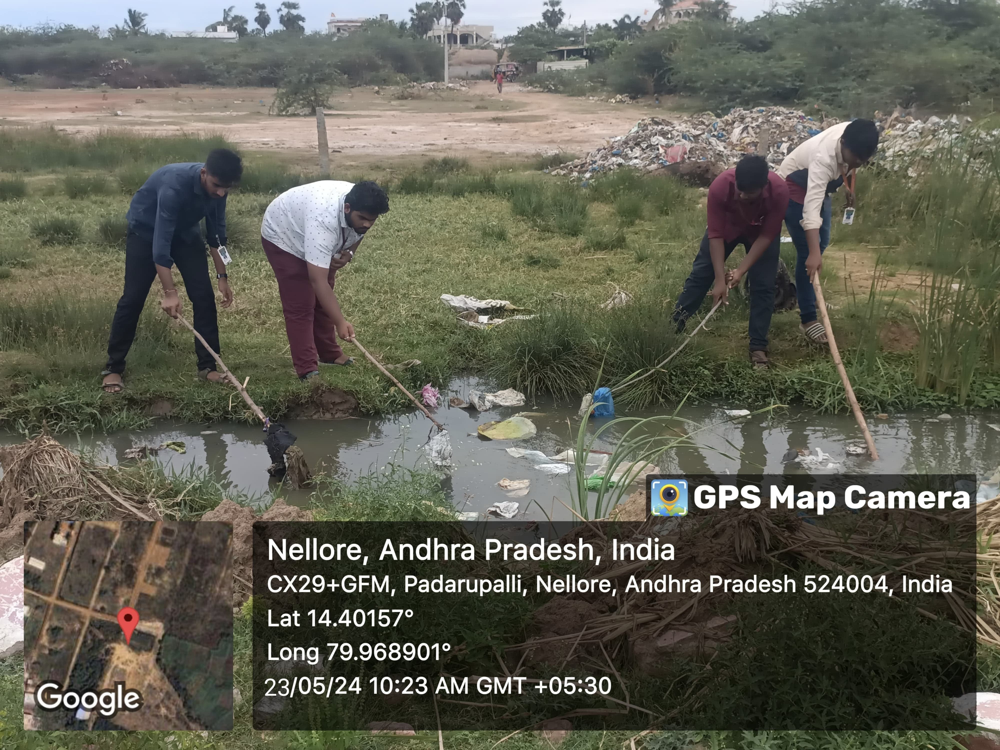
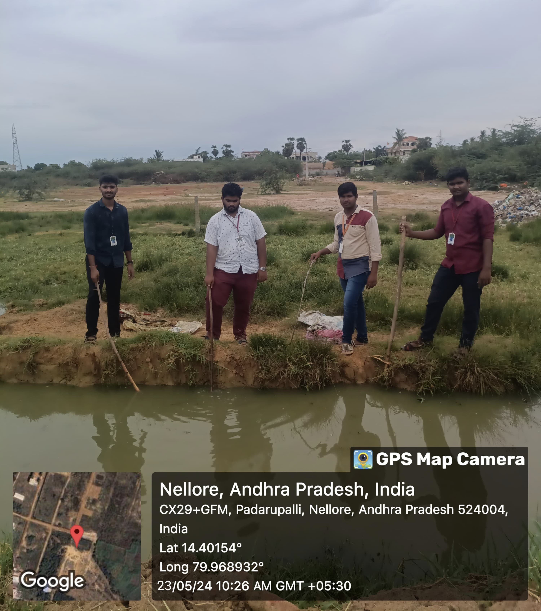
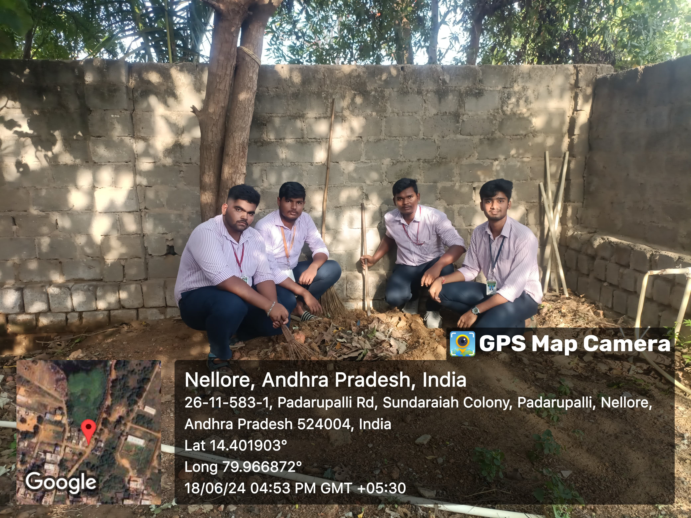
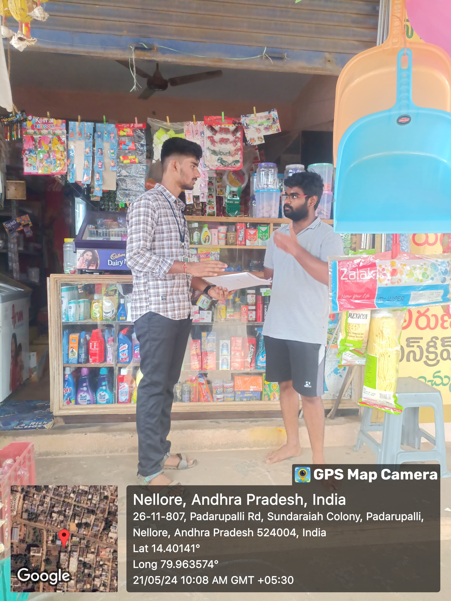
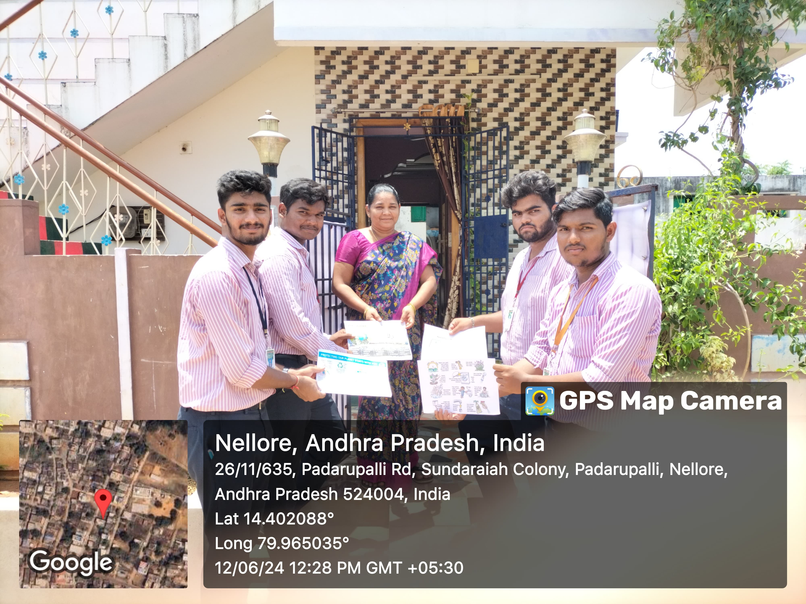
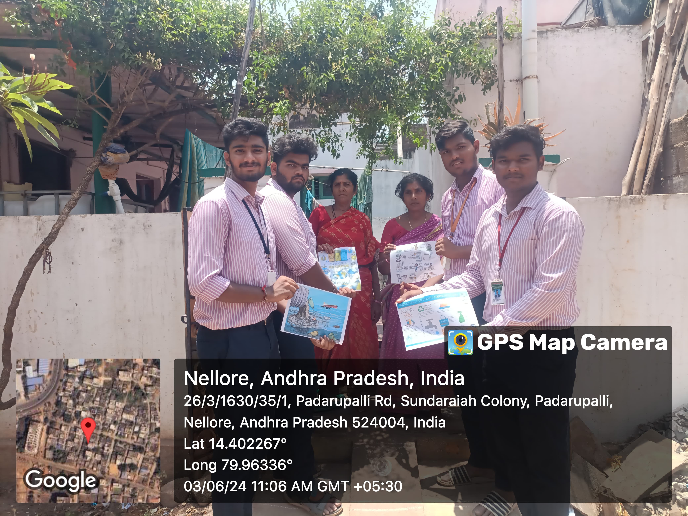
❮
❯